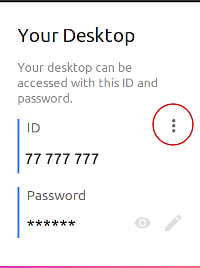
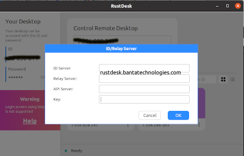

<!-- Remote Support Section -->

<section id="remote" class="bg-darkest-gray">
<button onclick="history.back()">Go Back</button>
     <div class="container">
        <div class="row">
             <div class="col-lg-9">
                <h2 class="section-heading">
                        Remote Services Setup
                      </h2>
                    </div>
                </div>

            <div>

<a href="https://rustdesk.com" target="_blank"> Go to https://rustdesk.com  </a><br>
<br>
<a>1. Click the download button</a> <br>
<br>
Either 2a. or 2.b.<br>
<a>2a. Use the dropdown arrow next to the file name at the bottom of the browser<a><br>
<br>
<a>2b. Bring up the File Browser and click Downloads<a><br>
<br>
<a>3. Right click on the rustdesk zipped file and select extract<a><br>
<br>
<a>4. Navigate into the rustdesk folder and double click rustdesk.exe<a><br>
<br>
<a>5. Click Yes or OK to any promts for admin access<a><br>
<br>
<a>6. Follow the instructions to install Rust Desk<a><br>
<br>
<a>7. Start RustDesk by clicking the icon on your desktop</a><br>
<br>
<a>8. Click the menu button that looks like three dots </a><br>
<br>
<p></p>
<br>
<a>9. Enter rustdesk.bantatechnologies.com in the ID textbox</a><br>
<br>
<br>
<a>10. Look for the green dot and the word "Ready" at the bottom left of Rust Desk  </a>

        </div>
    </div>

</section>
